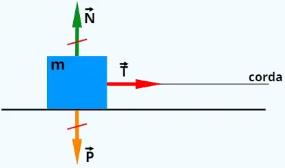

Força de Tração
Força de Tração (ou tensão) é uma força de contato aplicada sobre um corpo por meio de elementos flexíveis, como cordas, cabos, fios ou correntes. Ela atua sempre no sentido de puxar o objeto, propagando-se paralelamente à extensão do cabo e saindo do corpo que está sendo tensionado.
Diferente da força peso, e igualmente á força normal, a tração não possui uma fórmula própria fixa. O seu valor é calculado com base nas Leis de Newton, analisando o contexto de cada sistema mecânico.
Principais Características:
Para simplificar os cálculos na física teórica, costuma-se adotar o conceito de fios ideais, que apresentam as seguintes propriedades:
Massa desprezível: A massa do cabo não interfere no sistema.
Inextensíveis: Os fios não esticam (não sofrem deformação elástica), transmitindo a força integralmente de uma extremidade à outra.
Tensão uniforme: A intensidade da força de tração é exatamente a mesma em todos os pontos de um mesmo fio ideal.
Cálculo a Tração:
A determinação da tração baseia-se na Segunda Lei de Newton (FR = m ⋅ a), onde a força resultante é o produto da massa pela aceleração. O processo consiste em isolar o corpo, desenhar os vetores de todas as forças atuantes (como peso e atrito) e equacionar o movimento:
1. Objeto em Equilíbrio (Estático ou Retilíneo Uniforme): Se o corpo está parado ou com velocidade constante, a aceleração é zero (α=0). As forças se cancelam.
Um objeto de massa (M) pendurado verticalmente em repouso terá a tração igual ao seu peso:
2. Objeto em Movimento Acelerado: Se o sistema possui aceleração (α≠0), a diferença entre as forças dita o sentido do movimento.
Um elevador subindo acelerado precisa vencer a gravidade, logo a tração no cabo é maior que o peso:
A tração é um conceito fundamental na mecânica clássica e na engenharia, essencial para dimensionar de forma segura o funcionamento de elevadores, guindastes, pontes suspensas e sistemas de polias.